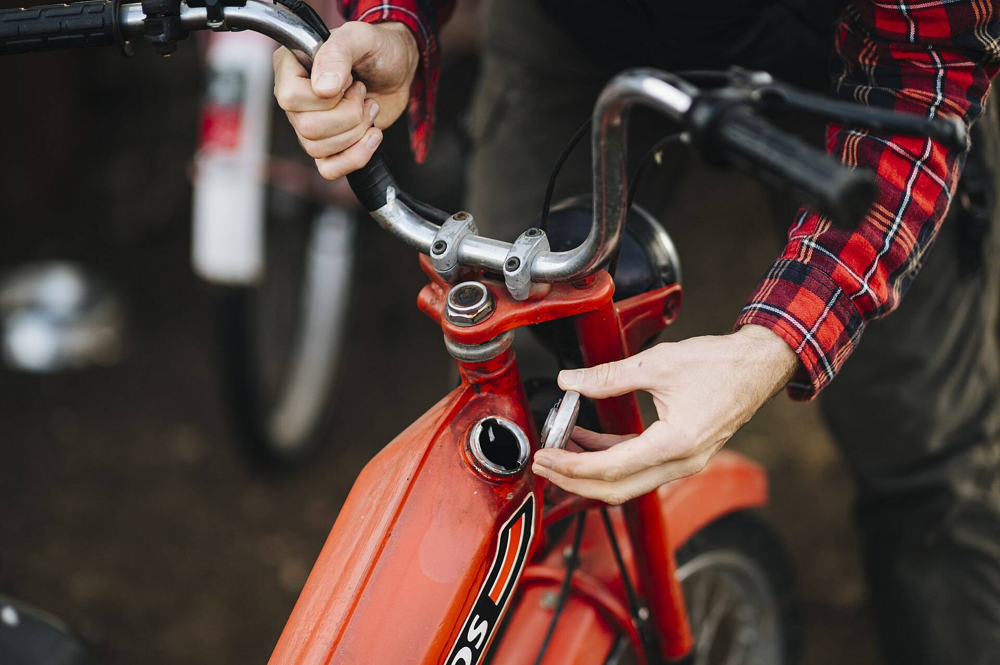
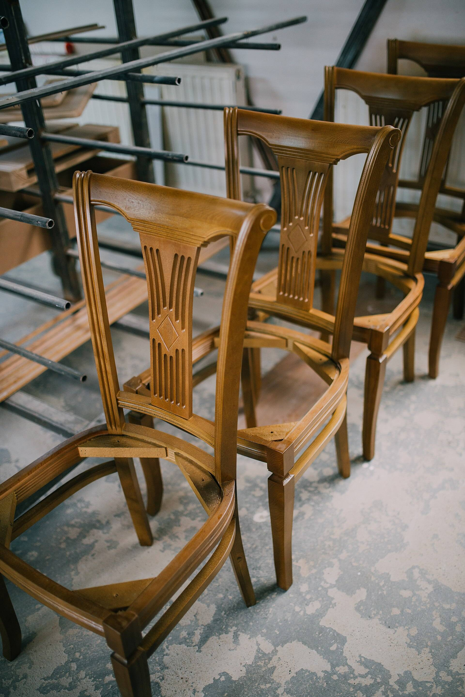
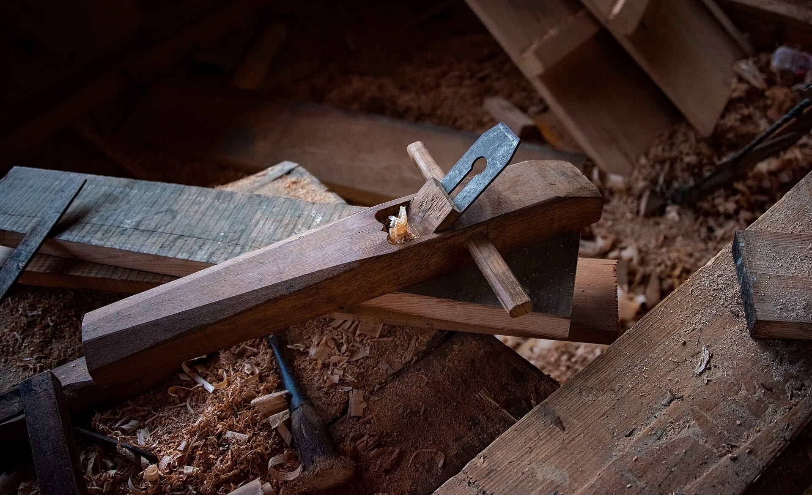

Repair
The independent quarterly on design and the people behind it.
- Pages
- 164
- A copy
- £18
- On sale
- 3 October

Margin Notes is an independent quarterly about design and the people behind it. Issue 9 gives every page to one word.
Inside Issue 9
Sample titles, to show the shape. The full contents run with the issue.
-
Report
The workshops keeping chairs in use
A long visit to the benches where furniture comes back.

Essay
What a mend says about the thing
On keeping, and what it costs.
Interview
A mechanic on learning by hand
Apprenticeship, without the word.
Portfolio
Tools worn to the shape of a hand
Photographed flat, at actual size.
Notes
Readers’ repairs, sent in
Small fixes, and why they mattered.
Printed to be kept
164 pages on uncoated stock, made to be read twice.

Pre-order Issue 9
| Issue | 9, Repair |
|---|---|
| Pages | 164 |
| On sale | 3 October |
| Price | £18 a copy |